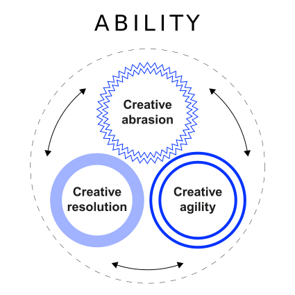

Leadership paradoxes
What tensions do leaders face?
Neu-Ulm University of Applied Sciences
March 31, 2025
Introduction
Opening remarks
The hallmark of a first-class leader is the ability to demonstrate contrary or opposing behaviors while maintaining a certain level of integrity, credibility and direction. Denison, Hooijberg, and Quinn (1995)
Was that what was meant by “oposing behaviors”?

Discussion
What was your most interessting finding in reading Lavine (2014)?
Paradoxes in leadership
Opening remarks
Leadership requires the capacity to recognize and react to paradox, contradiction, and complexity. Denison, Hooijberg, and Quinn (1995)
Discussion
What is a contradiction,
what a paradox?
Paradox
Contradiction refers to bipolar opposites that are mutually exclusive and interdependent such that the opposites define and potentially negate each other (Putnam, Fairhurst, and Banghart 2016, p 6).
For instance, supervisors who treat employees’ requests for family concerns as “taking away time from the office,” reinforce the belief that work and family are incongruent, and thus negate each other.
Paradox refers to contradictions that persist over time, impose and reflect back on each other, and develop into seemingly irrational or absurd situations because their continuity creates situations in which options appear mutually exclusive, making choices among them difficult (Putnam, Fairhurst, and Banghart 2016, p 8).
Paradoxes differ from contradictions in that they create situations of almost impossible choice, hence the seeming irrationality or absurdity of the situation.
For example, in the work-life literature, the finding that “the more autonomy that employees have, the harder they work, the more hours they devote, and the more that organizations control their lives” is paradoxical.
Discussion
What is ambidexterity,
what is behavioral complexity?
Ambidexterity
Ambidexterity refers to “an organization’s capacity to address two organizationally incompatible objectives equally well.” Birkinshaw and Gupta (2013, 291)
The ability of senior leadership teams to embrace tension between old states and activities and new ones is a key predictor of firm success (Tushman, Smith, and Binns 2011).
Leaders must “embrace inconsistency by maintaining multiple and often conflicting strategic demands.” O’Reilly III and Tushman (2011, 76)
Behavioral complexity
It takes complexity to defeat complexity. Uhl-Bien, Marion, and McKelvey (2007, 301)
Increasing social and organizational complexity requires cognitive complexity and behavioral complexity — “we must conceive and perform” (Denison, Hooijberg, and Quinn 1995, 524).
Effective leaders are those who have the cognitive as well as the behavioral capacity to recognize and react to paradox, contradiction, and complexity in their environments (Denison, Hooijberg, and Quinn 1995; Lawrence, Lenk, and Quinn 2009; Spreitzer and Quinn 1996).
Effective leadership is dependent on behavioral complexity, “the ability to perform the multiple roles and behaviors that circumscribe the requisite variety implied by an organizational or environmental context”. (Denison, Hooijberg, and Quinn 1995, 526)
Discussion
What is the competing values framework?
Competing values framework
Opening remarks
The competing values framework highlights the trade-offs, tensions, contradictions, and paradoxes inherent in organizations and their leaders. Lavine (2014, 194)
Ccompeting values (complexities)


Paradoxes in digital leadership
How does the digital age influence these paradoxes?
How do digital technologies facilitate the paradoxes outlined and/or enable leaders to mitigate these and help to deal with complexity?
Leadership traits
| Clan (collaborate) | Adhocracy (create) |
| Mentors, facilitators or team builders — they hold everything together when times are tough, and encourage the pursuit of shared objectives. They’ll help members of their team develop the skills needed to work together more effectively. | Visionaries — they embrace change and new thinking, and are often not overly worried about risk. They’re not just imaginative, but eager to turn their ideas into reality. |
| Hierarchy (control) | Market (compete) |
| Managers — they’re focused on organizing, problem solving, and ensuring things are done correctly. They’re scrupulous about paying attention to detail, staying informed, and being rigorous in their analyzes. | Deal makers — they are results-driven, and usually focused on the short-term. They like to take charge, and act fast to close deals with customers. |
Implications
Leadership qualities seem to be best demonstrated by more movement throughout the framework, suggesting complex adaptation to changing circumstances (Denison, Hooijberg, and Quinn 1995).
Complex situations require complex responses. Sometimes organizations benefit from stability, and sometimes they benefit from change. Often organizations need both stability and change at the same time. In contrast to earlier approaches, the development of the competing values framework did not assume that stability and change were mutually exclusive, an either/or decision. Quinn et al. (2020, 12)
Leading innovation
Opening remarks
Leading innovation takes a distinctive kind of leadership, one that unleashes and harnesses the “collective genius” of the people in the organization. Linda A. Hill
Innovation
What is an innovation?
An innovation can be defined as an idea, practice, or material artifact perceived to be new by the relevant unit of adoption and offers worthwhile benefits (Dewar and Dutton 1986).
Nature of innovating
What is innovating about?
Innovating is not about some genius having an aha moment.
Innovating is a team sport — combining individual’s member’s separate slices of genius into a single work of collective genius. Innovation requires a place where people are willing and able to do the hard work that innovative problem solving requires.
Significance
Competitiveness depends to a large extent on the ability to innovate. So the ongoing challenge is to build an organisation that is able to innovate all the time.
The rhetoric of innovation is often about fun and creativity, but the reality is that innovation can be very taxing and uncomfortable, both emotionally and intellectually. Linda A. Hill et al. (2014b, p. 5)
This requires leadership—a different kind of leadership?
Leadership
The role of a leader of innovation is to create a community that is willing and able to generate new ideas. (Linda A. Hill et al. 2014b, 4)
So the question is not “how do I make innovation happen?” but rather, “how do I set the stage for it to happen?”
Paradoxes of innovation
The paradox at the heart of innovation is the need to unleash the talents of individuals and to harness those talents in the form of collective innovation (Linda A. Hill et al. 2014a).


Hard work of innovation
The role of an innovation leader is to create a community that is willing and able to innovate over time (Linda A. Hill et al. 2014b).



Creative abrasion
Art challenges technology. Technology challenges art.
Part of the magic of Pixar is that these two disciplines bump up against each other and create something better than either could create by itself. Greg Brandeau, Pixar Animation Studios
Creative agility
Pursue. Reject. Adjust.
We used to launch products in an “all or nothing” mode to all of our users. Now we had the capability to test multiple different live versions of new products on 1 percent samples of our users. This yielded huge data sets and brought with it a change in mind-set for approaching innovation. We began to avoid projects that only allowed for “zero or one” decisions, instead choosing projects that could be rolled out and evaluated in small slices. Philipp Justus, eBay Germany
Creative resolution
From either or
to both-and thinking
We hired innovators and if I were to forbid a passionate team to do something, it really would have missused their talents. I wanted people with a vision, and the ambition to build the next great thing. We needed to let teams go far enough so they could in fact discover this great new thing. Or, in another scenario, they had to recognize it was not quite right, then decide to work on something else, in the best-case scenario integrating their knowledge to another solution. Bill Coughranm, Google
Innovation leaders
The leaders Linda A. Hill et al. (2014a) studied had some things in common — they call it the right stuff
Q&A
Homework
Read House (1996) and answer following questions:
- What is the essence of the theory?
- How does leader behavior impact subordinates’ motivation, satisfaction, and performance?
- What leader behaviors have you experienced?
- Do you have empirical evidence on the propositions made?
Literature
Footnotes
A paradox can be defined as a set of mutually inconsistent propositions, each of which seems true (Rescher 2004).
Generosity here means the willingness, based on their own sense of personal security, to share power, control and credit
This includes the willingness to admit imperpections and asking for help